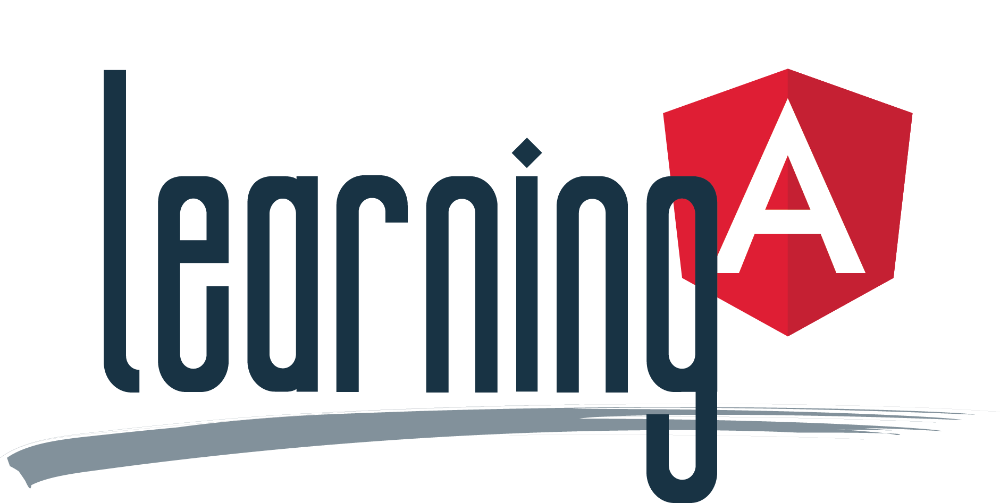

<nav class="navbar navbar-expand-lg bg-body-tertiary">
    <div class="container-fluid navbar-custom-colour">
        <a class="navbar-brand ms-5 me-5" routerLink="/">
            <!-- <h2 class="niceblue">Learning Angular 2+</h2> -->
            
        </a>
        <!-- MOBILE BUTTON -->
        <button class="navbar-toggler niceblue" type="button" data-bs-toggle="collapse" data-bs-target="#navbarSupportedContent" aria-controls="navbarSupportedContent" aria-expanded="false" aria-label="Toggle navigation">
            <span class="navbar-toggler-icon"></span>
        </button>
        <!-- MOBILE DROPDOWN MENU -->
        <div class="ms-4 collapse navbar-collapse lead" id="navbarSupportedContent">
            <ul class="navbar-nav me-auto mb-2 mb-lg-0">
                <!-- DROPDOWN LINK SECTIONS -->
                <li class="nav-item dropdown lead me-4">
                    <a class="nav-link dropdown-toggle" role="button" data-bs-toggle="dropdown" aria-expanded="false">
                        Angular Sections
                    </a>
                    <ul class="dropdown-menu">
                        <li *ngFor="let section of AngularSections let i = index">
                            <a class="dropdown-item section-link"
                            routerLink="{{section.link}}">{{ i + 1 }}. {{section.name}}
                            </a>
                        </li>
                    </ul>
                </li>
                <!-- DROPDOWN LINK PROJECTS -->
                <li class="nav-item dropdown lead me-5">
                    <a class="nav-link dropdown-toggle" role="button" data-bs-toggle="dropdown" aria-expanded="false">
                        Projects
                    </a>
                    <ul class="dropdown-menu">
                        <li *ngFor="let project of AngularProjects let i = index">
                            <a class="dropdown-item section-link"
                            routerLink="{{project.link}}">{{ i + 1 }}. {{project.name}}
                            </a>
                        </li>
                    </ul>
                </li>
                <!-- OTHER NAV LINKS -->
                <li *ngFor="let link of navLinks" class="me-4 nav-item lead">
                    <a class="nav-link active" aria-current="page" routerLink="{{link.link}}">{{link.name}}</a>
                </li>
                <!-- LINKEDIN -->
                <li class="me-4 nav-item lead">
                    <a class="nav-link active"
                        aria-current="page"
                        href="https://www.linkedin.com/in/nickpolizogopoulos/"
                        target="_blank">LinkedIn
                    </a>
                </li>
                <!-- GITHUB -->
                <li class="me-4 nav-item lead">
                    <a class="nav-link active"
                        aria-current="page"
                        href="https://github.com/nickpolizogopoulos"
                        target="_blank">GitHub
                    </a>
                </li>
                
            </ul>
        </div>
    </div>
</nav>